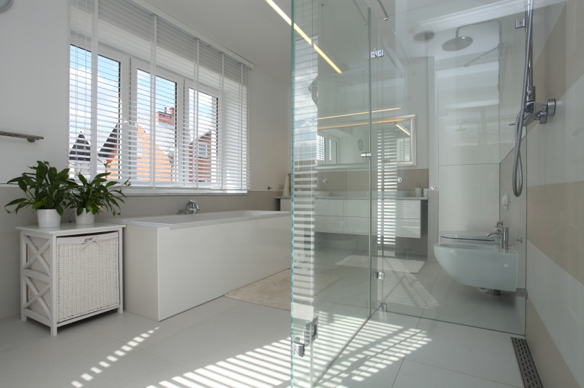

Welk type glas past bij mijn woning?
Niet de productnaam, maar je woning, je kozijn en je woonwens bepalen welk glas het beste bij je past.

Wie zich verdiept in nieuw glas, belandt al snel in een alfabetsoep van HR++, HR+++, Ug-waarden, coatings en glasopbouwen. Toch is de eerste vraag die wij aan klanten stellen niet "wat is het beste glas?" De betere vraag is: welk probleem wil je met dat glas oplossen, en wat kan je kozijn eigenlijk aan?
Begin bij de functie van het raam
Glas kan warmte binnenhouden, geluid dempen, zonnewarmte beperken, letsel voorkomen, inbraak vertragen of privacy bieden. Soms moet één ruit meerdere van die functies tegelijk combineren. Een slaapkamer aan een drukke straat vraagt iets anders dan een zonnige pui op het zuiden, en een monumentaal raam met een smalle sponning stelt weer heel andere eisen dan een nieuwbouwkozijn. Daarom kijken wij bij elk advies eerst naar de plek en de functie van het raam, voordat we het over een productnaam hebben.
De Ug-waarde: lager is beter
Voor warmte-isolatie is de Ug-waarde de belangrijkste vergelijkingswaarde. Die geeft aan hoeveel warmte er door het glas verloren gaat, en hoe lager die waarde, hoe beter het glas isoleert. Kijk daarom niet alleen naar labels als HR++ of triple, maar vraag altijd naar de daadwerkelijke Ug-waarde van de glasopbouw die je aangeboden krijgt. Wij geven die waarde standaard mee in onze offertes, juist omdat productnamen onderling nogal kunnen verschillen.
HR++ glas: vaak de logische stap in bestaande kozijnen
HR++ glas bestaat uit twee glasbladen met daartussen een isolerende spouw. Een warmte-reflecterende coating en gasvulling verbeteren de isolatie verder, en voor veel bestaande woningen is dit een sterke combinatie van comfort, investering en toepasbaarheid. Wil je meer weten over hoe HR++ zich verhoudt tot enkel glas en dubbel glas, dan hebben we dat in een apart artikel op een rij gezet.
HR++ glas is in onze ervaring vaak passend wanneer de bestaande kozijnen technisch goed zijn en voldoende ruimte bieden, wanneer je enkelglas of ouder dubbelglas wilt vervangen, wanneer je vooral van kouval en warmteverlies af wilt, en wanneer het extra gewicht en de dikte binnen de bestaande constructie passen. "Past in het kozijn" is trouwens geen gevoel maar een technische beoordeling: sponningdiepte, glaslatten, afwatering, scharnieren en de staat van het kozijn tellen allemaal mee. Twijfel je of jouw bestaande kozijnen geschikt zijn voor HR-glas, dan meten we dat graag voor je na.
Triple glas: interessant bij een hoge isolatieambitie
Triple glas bestaat uit drie glasbladen en twee isolerende spouwen. Het isoleert beter dan HR++ glas, maar is ook dikker en zwaarder, en daardoor vooral logisch wanneer kozijnen sowieso worden vervangen, wanneer een woning vergaand wordt geïsoleerd, of wanneer de bestaande kozijnen aantoonbaar geschikt zijn. Triple glas is bij ons vaak in beeld wanneer je nieuwe, goed isolerende kozijnen laat plaatsen, wanneer je de hele gebouwschil naar een hoog isolatieniveau brengt, wanneer comfort dicht bij grote glasoppervlakken belangrijk is, of wanneer de constructie het gewicht en de benodigde glasdikte kan dragen.
Zeer goed glas in een matig isolerend of slecht ventilerend huis is trouwens geen complete oplossing. Kozijnen, kierdichting, gevelisolatie en ventilatie bepalen samen het uiteindelijke comfort, en dat is precies waarom wij altijd naar de hele situatie kijken in plaats van alleen naar de ruit.
Vacuümglas of dun isolatieglas: voor beperkte ruimte
Bij monumenten, karakteristieke panden en slanke kozijnen is soms te weinig ruimte voor standaard HR++ of triple glas. Dun isolatieglas of vacuümglas kan dan een oplossing zijn: het isoleert vergelijkbaar met of beter dan triple glas, terwijl het net zo dun blijft als een enkele ruit. De prestaties en randvoorwaarden verschillen wel sterk per product, dus laten wij altijd controleren of het past bij het kozijn, de uitstraling en eventuele monumentale eisen.
Veiligheidsglas: wanneer letsel of doorval een risico is
Glas in deuren, lage ramen, puien en situaties met een hoogteverschil kan aanvullende veiligheidseisen hebben. Gelaagd glas blijft bij breuk grotendeels bijeen, terwijl thermisch gehard glas uiteenvalt in relatief kleine korrels. Welke uitvoering nodig is, hangt af van de positie, afmetingen en bereikbaarheid van de ruit. We schreven eerder al uitgebreider over het verschil tussen gehard en gelaagd glas, en toetsen dit altijd aan de geldende eisen in plaats van veiligheid als optionele extra te behandelen.
Geluidswerend glas: niet simpelweg "dikker glas"
Voor geluidsisolatie telt de volledige glasopbouw. Verschillende glasdikten, een akoestische folie en de aansluiting op kozijn en gevel kunnen samen het verschil maken. Ook is belangrijk welk geluid je precies wilt verminderen, want stemmen, wegverkeer en laagfrequent geluid gedragen zich niet hetzelfde.
Zonwerend glas: voor ramen die te veel warmte binnenlaten
Grote glasvlakken op een zonnige gevel kunnen in de zomer voor oververhitting zorgen. Zonwerend glas beperkt een deel van die zonnewarmte voordat die binnenkomt. Let daarbij naast de zonwering ook op daglicht, kleurweergave en uitstraling, want "zo donker mogelijk" is zelden de beste ontwerpoplossing voor een woonkamer of pui.
Privacy-, figuur- en matglas
Voor badkamers, voordeuren en ramen dicht bij de erfgrens kan privacyglas passend zijn. Bedenk wel dat privacy overdag niet automatisch privacy in de avond betekent: wanneer het binnen lichter is dan buiten, kunnen silhouetten alsnog zichtbaar blijven. De gekozen structuur, folie of matte afwerking bepaalt uiteindelijk hoeveel licht en zicht wordt doorgelaten.
Een praktische vuistregel
Heb je enkelglas in verder goede, bestaande kozijnen, dan komen wij meestal uit op HR++ glas, waarbij we vooral de sponning, de staat van het kozijn en de ventilatie laten controleren. Ga je voor nieuwe kozijnen met een hoge isolatieambitie, dan ligt triple glas voor de hand, en dan kijken we naar de Uw-waarde van glas én kozijn samen. Bij een monument of een zeer smalle sponning denken we eerder aan dun isolatieglas of vacuümglas, mits dat past binnen de monumenteisen, de detaillering en de garantievoorwaarden. Ligt een raam laag bij de vloer of zit het in een deur, dan is veiligheidsglas aan de orde, afgestemd op de positie en de geldende veiligheidseisen. Woon je aan een drukke straat of spoorlijn, dan kijken we naar een akoestische glasopbouw en de aansluiting van kozijn en gevel. En heb je een grote, zonnige pui, dan is zonwerend glas vaak logisch, zolang we de zontoetreding, het daglicht en het zomercomfort goed tegen elkaar afwegen.
Drie fouten die je beter voorkomt
De eerste valkuil is alleen op de laagste prijs kiezen. Glas moet passen bij kozijn, functie, veiligheid en montage, en een goedkope ruit die later aanpassing of vervanging vraagt is een dure omweg. De tweede valkuil is alleen de productnaam vergelijken: vraag altijd naar de volledige opbouw, de Ug-waarde en de relevante prestaties voor geluid, veiligheid of zonwering. De derde valkuil is ventilatie vergeten. Beter isoleren maakt gecontroleerde ventilatie juist belangrijker, niet overbodig, dus bespreek ook de roosters en ventilatiemogelijkheden mee.
Het beste glas bestaat niet los van de woning
Voor de ene woning is HR++ glas de meest verstandige verbetering. Voor een andere woning is triple glas logisch, of juist een dun gespecialiseerd product zoals vacuümglas. De kwaliteit van de keuze zit hem in de combinatie: het juiste glas, in een geschikt kozijn, professioneel geplaatst en afgestemd op wat je in de ruimte wilt verbeteren. Twijfel je nog welk glas bij jouw ramen past, dan lees je dat ook terug in ons artikel over hoe je herkent welk glas je nu al hebt.
Stuur foto's en globale maten via ons contactformulier, of plan meteen een inmeetafspraak. Wij kijken dan naar het kozijn, de ligging van het raam en je belangrijkste woonwens, en adviseren vervolgens een glasopbouw die daar echt bij past.